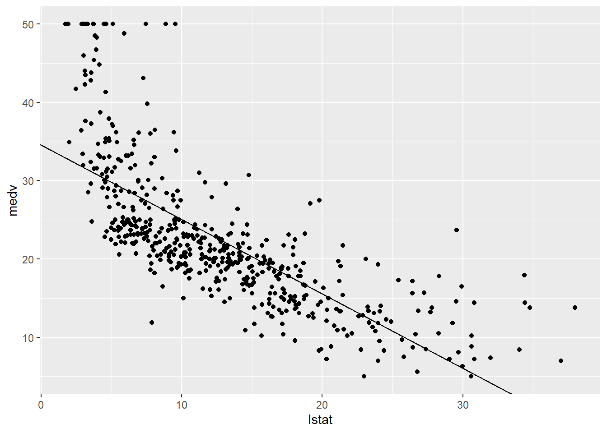
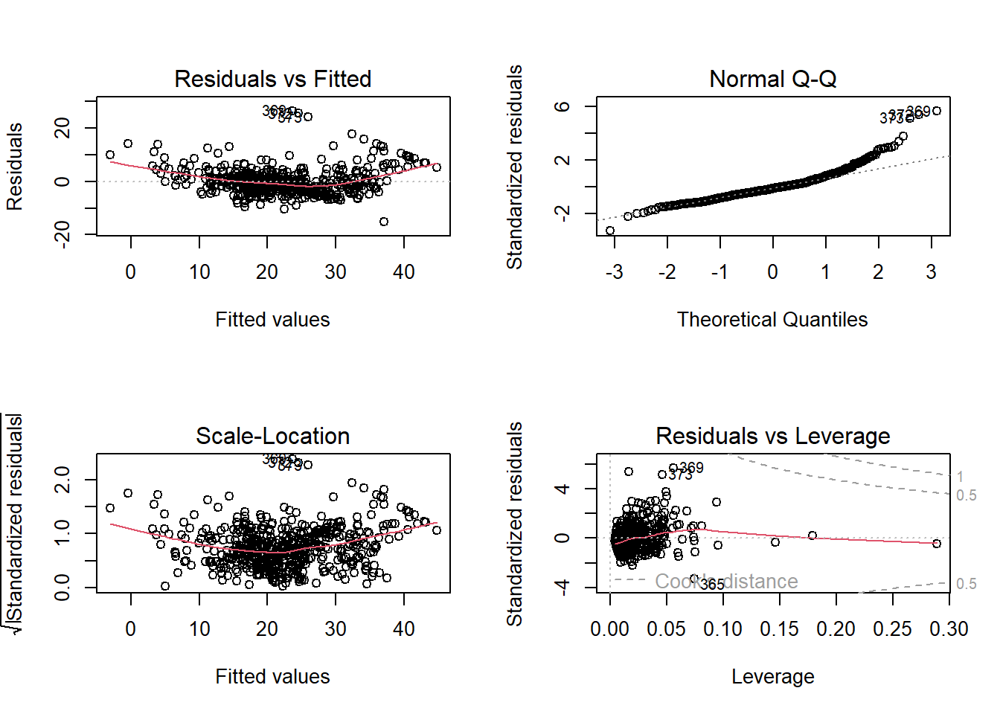
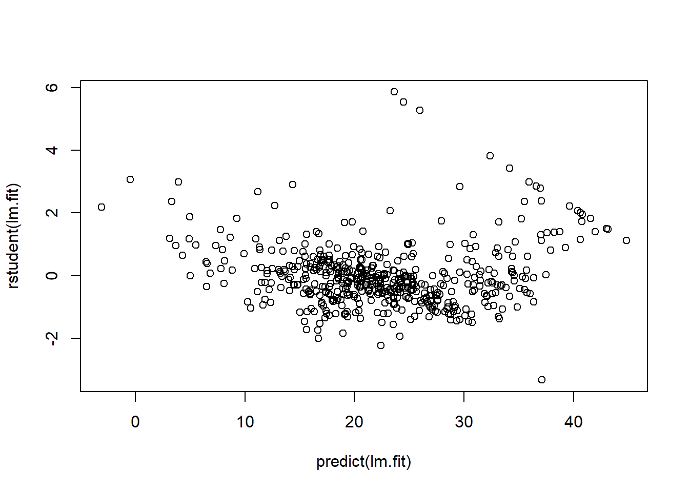

# install.packages("ISLR2", repos = list(CRAN="http://cran.rstudio.com/"))
library (ISLR2)Week 03 - Lab Roadmap - Linear Regression
Simple and Multiple Linear Regression
This week, we will fit simple and multiple linear regression models in R and learn to interpret the R output.
Step 1 : First Analyse: Simple linear regression (15 Min)
Loading the ISLR2 Package
- Install and load the
ISLR2package, which contains a large collection of data sets and functions.
Dataset
- Use the
Bostondata set in theISLR2library. It recordsmedv(median house value) for 506 census tracts in Boston. Have a look at the first few rows of the Boston data set:
head (Boston) crim zn indus chas nox rm age dis rad tax ptratio lstat medv
1 0.00632 18 2.31 0 0.538 6.575 65.2 4.0900 1 296 15.3 4.98 24.0
2 0.02731 0 7.07 0 0.469 6.421 78.9 4.9671 2 242 17.8 9.14 21.6
3 0.02729 0 7.07 0 0.469 7.185 61.1 4.9671 2 242 17.8 4.03 34.7
4 0.03237 0 2.18 0 0.458 6.998 45.8 6.0622 3 222 18.7 2.94 33.4
5 0.06905 0 2.18 0 0.458 7.147 54.2 6.0622 3 222 18.7 5.33 36.2
6 0.02985 0 2.18 0 0.458 6.430 58.7 6.0622 3 222 18.7 5.21 28.7We want to predict medv using the available predictors, such as rm (average number of rooms per house), age (average age of houses), and lstat (percentage of households with low socioeconomic status).
Linear Regression
- Fit a simple linear regression
lm()model, withmedvas the response andlstatas the predictor:
lm.fit <- lm(medv ~ lstat , data = Boston)The basic syntax is lm(y ∼ x, data), where y is the response, x is the predictor, and data is the data set in which we keep these two variables.
- Use the
tidyfunction to create a dataframe with columns for the estimate, standard error, f-statistic (estimate/standard error), p-values, and 95 percent confidence intervals:
library(broom)
tidy(lm.fit, conf.int = TRUE)# A tibble: 2 × 7
term estimate std.error statistic p.value conf.low conf.high
<chr> <dbl> <dbl> <dbl> <dbl> <dbl> <dbl>
1 (Intercept) 34.6 0.563 61.4 3.74e-236 33.4 35.7
2 lstat -0.950 0.0387 -24.5 5.08e- 88 -1.03 -0.874Because lm.fit is a simple linear regression model, there are only two coefficients: \(\hat{\beta}_0\) and \(\hat{\beta}_1\). The goodness-of-fit of the model can be measured by the \(R^2\) in the output, which can be obtained (along with other model statistics) using the glance function.
glance(lm.fit)$r.squared[1] 0.5441463Plotting Results
- Plot
medvandlstatalong with the least squares regression line using thegeom_point()andgeom_abline()functions.:
library(tidyverse)
ggplot(data = Boston, aes(x = lstat, y = medv)) +
geom_point() +
geom_abline(intercept = lm.fit$coefficients[1], slope = lm.fit$coefficients[2])
B) Step 2: Second Analyse: Multiple linear regression
We will still use the Boston data set to fit multiple linear regression. The fitting process is similar to simple linear regression.
Linear Regression
- Fit a multiple linear regression
lm()model, withmedvas the response,lstatandageas the predictors:
lm.fit <- lm(medv ~ lstat + age , data = Boston)tidy(lm.fit, conf.int = TRUE)# A tibble: 3 × 7
term estimate std.error statistic p.value conf.low conf.high
<chr> <dbl> <dbl> <dbl> <dbl> <dbl> <dbl>
1 (Intercept) 33.2 0.731 45.5 2.94e-180 31.8 34.7
2 lstat -1.03 0.0482 -21.4 8.42e- 73 -1.13 -0.937
3 age 0.0345 0.0122 2.83 4.91e- 3 0.0105 0.0586The syntax lm(y ~ x1 + x2 + x3) is used to fit a model with three predictors, x1, x2, and x3. The tidy() function now outputs the regression coefficients for all the predictors.
- Fit a multiple linear regression
lm()model, withmedvas the response, all rest variables as the predictors:
lm.fit <- lm(medv ~ ., data = Boston)
tidy(lm.fit, conf.int = TRUE)# A tibble: 13 × 7
term estimate std.error statistic p.value conf.low conf.high
<chr> <dbl> <dbl> <dbl> <dbl> <dbl> <dbl>
1 (Intercept) 41.6 4.94 8.43 3.79e-16 31.9 51.3
2 crim -0.121 0.0330 -3.68 2.61e- 4 -0.186 -0.0565
3 zn 0.0470 0.0139 3.38 7.72e- 4 0.0197 0.0742
4 indus 0.0135 0.0621 0.217 8.29e- 1 -0.109 0.136
5 chas 2.84 0.870 3.26 1.17e- 3 1.13 4.55
6 nox -18.8 3.85 -4.87 1.50e- 6 -26.3 -11.2
7 rm 3.66 0.420 8.70 4.81e-17 2.83 4.48
8 age 0.00361 0.0133 0.271 7.87e- 1 -0.0226 0.0298
9 dis -1.49 0.202 -7.39 6.17e-13 -1.89 -1.09
10 rad 0.289 0.0669 4.33 1.84e- 5 0.158 0.421
11 tax -0.0127 0.00380 -3.34 9.12e- 4 -0.0202 -0.00521
12 ptratio -0.938 0.132 -7.09 4.63e-12 -1.20 -0.678
13 lstat -0.552 0.0507 -10.9 6.39e-25 -0.652 -0.452 We can access the individual components of a summary object by name (type ?glance to see what is available). Hence glance(lm.fit)$r.squared gives us the \(R^2\).
Variable Selection
- Select variables:
In these two multiple linear regression models, the t-tests and F-test results suggest that many of the predictors are significant for the response variable. However, some do not achieve statistical significance. Can you see which variables these are?
We call the process of determining which predictors are associated with the response as variable selection.
If the number of predictors is very small, we could perform the variable selection by trying out a lot of different models, each containing a different subset of the predictors. We can then select the best model out of all of the models we have considered.
Using the template below, try figuring out the model which produces the highest adjusted \(R^2\). The adjusted \(R^2\) has a similar interpretation to \(R^2\), only it is an advantage here as it penalises models that include insignificant parameters.
lm.fit <- lm(medv ~ ., data = Boston)
glance(lm.fit)$adj.r.squared[1] 0.7278399We found that if you remove indus and age, the adjusted \(R^2\) becomes slightly larger compared to including all predictors.
lm.fit <- lm(medv ~ ., data = Boston[,-c(3,7)])
glance(lm.fit)$adj.r.squared[1] 0.7288734Step 3: Some potential problems (15 min)
Many problems may occur when we fit a linear regression model to a particular data set. These problems will lead to inaccurate estimation. In this step, we will identify and overcome potential problems such as outliers, collinearity and interaction effects.
1. Handle interaction terms:
In regression, an interaction effect exists when the effect of an independent variable on the response variable changes, depending on the values of one or more independent variables. When you believe there is an interaction effect, it is easy to include interaction terms in a linear model using the lm() function.
tidy(lm(medv ~ lstat * age , data = Boston))# A tibble: 4 × 5
term estimate std.error statistic p.value
<chr> <dbl> <dbl> <dbl> <dbl>
1 (Intercept) 36.1 1.47 24.6 4.91e-88
2 lstat -1.39 0.167 -8.31 8.78e-16
3 age -0.000721 0.0199 -0.0363 9.71e- 1
4 lstat:age 0.00416 0.00185 2.24 2.52e- 2The syntax lstat:age tells R to include an interaction term between lstat and age The syntax lstat*age simultaneously includes lstat, age, and the interaction term lstat×age as predictors; it is a shorthand for lstat+age+lstat:age.
2. Identify outliers through residual plots:
An outlier is a point for which \(\hat{y}_i\) is far from the value predicted by the model. Outliers can arise for a variety of reasons, such as incorrect recording of observation during data collection. Outliers could be identified through residual plots:
par(mfrow = c(2, 2))
plot(lm.fit)
The plot function automatically produces four diagnostic plots when you pass the output from lm(). Plots on the left column are residual plots, indicating the relationship between residuals and fitted values.
In practice, it can be difficult to decide how large a residual needs to be before we consider the point to be an outlier. Instead of plotting the residuals, we can address this problem by plotting the studentized residuals. These are computed by dividing each residual ei by its estimated standard studentized residual error. Observations with studentized residuals greater than 3 in absolute value are possible outliers. Using the plot() function to plot the studentized residuals:
plot(predict(lm.fit), rstudent(lm.fit))
3. Handle outliers:
If we believe an outlier is due to an error in data collection or recording, then one solution is to simply remove the observation. However, care should be taken, as an outlier may instead signal a deficiency with our model, such as a missing predictor.
4. Detect multicollinearity using the correlation matrix:
Multicollinearity refers to the situation in which two or more predictor variables are highly correlated to one another. It can be detected through the correlation matrix:
cor(Boston) crim zn indus chas nox
crim 1.00000000 -0.20046922 0.40658341 -0.055891582 0.42097171
zn -0.20046922 1.00000000 -0.53382819 -0.042696719 -0.51660371
indus 0.40658341 -0.53382819 1.00000000 0.062938027 0.76365145
chas -0.05589158 -0.04269672 0.06293803 1.000000000 0.09120281
nox 0.42097171 -0.51660371 0.76365145 0.091202807 1.00000000
rm -0.21924670 0.31199059 -0.39167585 0.091251225 -0.30218819
age 0.35273425 -0.56953734 0.64477851 0.086517774 0.73147010
dis -0.37967009 0.66440822 -0.70802699 -0.099175780 -0.76923011
rad 0.62550515 -0.31194783 0.59512927 -0.007368241 0.61144056
tax 0.58276431 -0.31456332 0.72076018 -0.035586518 0.66802320
ptratio 0.28994558 -0.39167855 0.38324756 -0.121515174 0.18893268
lstat 0.45562148 -0.41299457 0.60379972 -0.053929298 0.59087892
medv -0.38830461 0.36044534 -0.48372516 0.175260177 -0.42732077
rm age dis rad tax ptratio
crim -0.21924670 0.35273425 -0.37967009 0.625505145 0.58276431 0.2899456
zn 0.31199059 -0.56953734 0.66440822 -0.311947826 -0.31456332 -0.3916785
indus -0.39167585 0.64477851 -0.70802699 0.595129275 0.72076018 0.3832476
chas 0.09125123 0.08651777 -0.09917578 -0.007368241 -0.03558652 -0.1215152
nox -0.30218819 0.73147010 -0.76923011 0.611440563 0.66802320 0.1889327
rm 1.00000000 -0.24026493 0.20524621 -0.209846668 -0.29204783 -0.3555015
age -0.24026493 1.00000000 -0.74788054 0.456022452 0.50645559 0.2615150
dis 0.20524621 -0.74788054 1.00000000 -0.494587930 -0.53443158 -0.2324705
rad -0.20984667 0.45602245 -0.49458793 1.000000000 0.91022819 0.4647412
tax -0.29204783 0.50645559 -0.53443158 0.910228189 1.00000000 0.4608530
ptratio -0.35550149 0.26151501 -0.23247054 0.464741179 0.46085304 1.0000000
lstat -0.61380827 0.60233853 -0.49699583 0.488676335 0.54399341 0.3740443
medv 0.69535995 -0.37695457 0.24992873 -0.381626231 -0.46853593 -0.5077867
lstat medv
crim 0.4556215 -0.3883046
zn -0.4129946 0.3604453
indus 0.6037997 -0.4837252
chas -0.0539293 0.1752602
nox 0.5908789 -0.4273208
rm -0.6138083 0.6953599
age 0.6023385 -0.3769546
dis -0.4969958 0.2499287
rad 0.4886763 -0.3816262
tax 0.5439934 -0.4685359
ptratio 0.3740443 -0.5077867
lstat 1.0000000 -0.7376627
medv -0.7376627 1.0000000Ignoring the last row and the last column in the matrix, which indicate the relationship with response variable medv, an element of this matrix that is large in absolute value indicates a pair of highly correlated variables, and therefore a collinearity problem in the data.
We can detect multicollinearity quantitatively using vif() function in the car package:
#install.packages("car", repos = list(CRAN="http://cran.rstudio.com/"))
library(car)vif(lm.fit) crim zn chas nox rm dis rad tax
1.765478 2.239107 1.056997 3.758338 1.819577 3.438955 6.826385 7.258419
ptratio lstat
1.755565 2.527415 Instead of inspecting the correlation matrix, a better way to assess multicollinearity is to compute the variance inflation factor (VIF). As a rule of thumb, a VIF value that exceeds 5 or 10 indicates a problematic amount of collinearity.
5. Handle collinearity:
When faced with the problem of multicollinearity, there are two simple solutions.
-The first is to drop one of the problematic variables from the regression.
-The second solution is to combine the collinear variables into a single predictor, where such combination makes theoretical sense.
Step4: Practical exercises (50 min)
So far, we have learnt to fit simple and multiple linear regression models in R. In this practical case, we will continue to use the data set Auto studied in the last lab. Make sure that the missing values have been removed from the data.
Eight questions are listed below. You are required to try to answer these questions in pairs using R commands. We will go over the solutions once everyone has finished these questions.
Questions
Use the
lm()function to perform a simple linear regression withmpgas the response andhorsepoweras the predictor. Use thetidy()function to print the results. Comment on the output. For example:- Is there a relationship between the predictor and the response?
- How strong is the relationship between the predictor and the response?
- Is the relationship between the predictor and the response positive or negative?
- What is the predicted
mpgassociated with ahorsepowerof 98? What are the associated 95 % confidence intervals?
Plot the response and the predictor. Use the
geom_abline()function to display the least squares regression line.Use the
plot()function to produce diagnostic plots of the least squares regression fit. Comment on any problems you see with the fit.Produce a scatterplot matrix that includes all the variables in the data set.
Compute the matrix of correlations between the variables using the function
cor(). You will need to exclude thenameandoriginvariable, which is qualitative.Use the
lm()function to perform a multiple linear regression withmpgas the response and all other variables exceptnameas the predictors. Use thetidy()function to print the results. Comment on the output. For instance:- Is there a relationship between the predictors and the response?
- Which predictors appear to have a statistically significant relationship to the response?
- What does the coefficient for the year variable suggest?
Use the
plot()function to produce diagnostic plots of the linear regression fit. Comment on any problems you see with the fit. Do the residual plots suggest any unusually large outliers?Use the
*and:symbols to fit linear regression models with interaction effects. Do any interactions appear to be statistically significant?